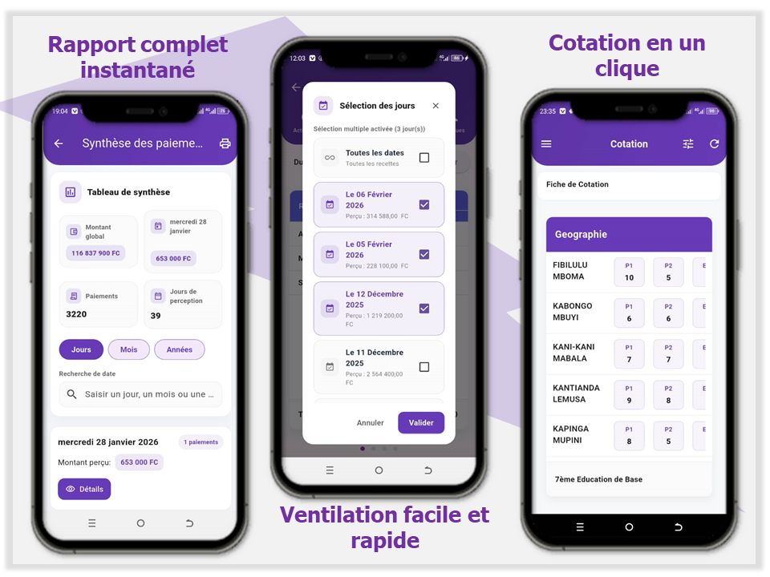
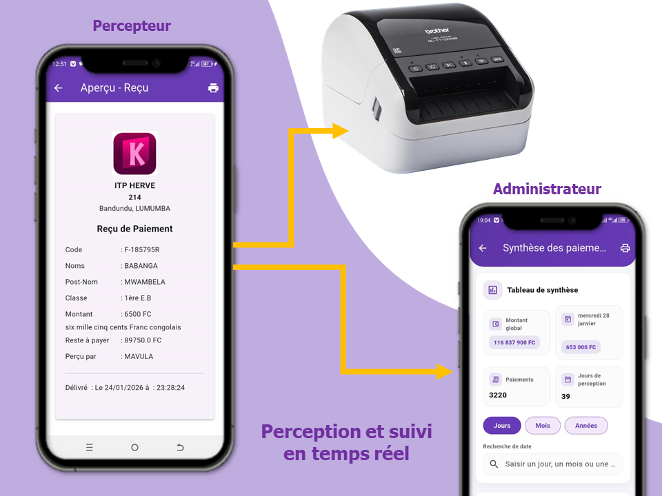
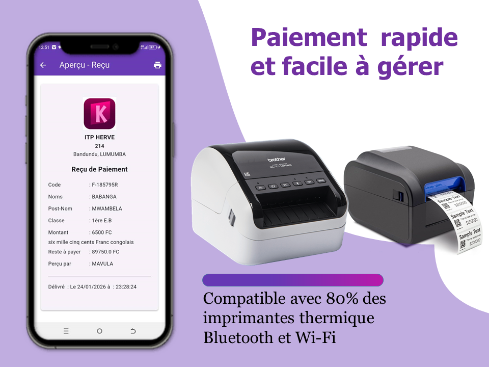

Commencer
+33 Ecoles
Plusieurs écoles utilisent déjà KELASI sur le terrain.
Mode hors ligne
pour continuer à percevoir même avec internet instable.
Mise en place rapide
pour démarrer en quelques heures, pas en quelques semaines.
La gestion scolaire qui tient le terrain, même quand le réseau tombe.
KELASI aide les écoles à encaisser, contrôler les élèves en ordre, suivre les enseignants et produire des rapports clairs depuis un simple téléphone.
Vue opérationnelle
Un poste mobile pour l'agent, une vision claire pour la direction.
La perception, le suivi des élèves et les preuves d'encaissement restent synchronisés autour d'une seule interface simple.

Perception mobile
Encaissez et imprimez un reçu sans retourner au bureau.
Contrôle des élèves
Vérifiez en quelques secondes qui est en ordre.
Chaque paiement est tracé et prêt à être imprimé.
Le personnel identifie vite les élèves en ordre avant les épreuves.
Les rapports par période donnent une lecture immédiate des encaissements.
La direction garde une vue propre sur les opérations et les équipes.
Ce qui change vite
Une interface pensée pour les opérations scolaires, pas pour faire joli.
La page d'accueil met en avant les cas d'usage concrets qui comptent pour une école : percevoir vite, contrôler proprement et piloter sans ressaisie.
Encaissement propre
Un flux simple pour percevoir, confirmer le montant et remettre un reçu immédiat.
Contrôle instantané
Le personnel vérifie les élèves en ordre sur place, sans liste papier ni retard.
Rapports exploitables
Les chiffres remontent par période pour aider la direction à décider rapidement.
Suivi de l'équipe
Présence et organisation quotidienne restent visibles sans ajouter de complexité.
Parcours simple
Encaisser, contrôler, piloter. Sans ressaisie et sans aller-retour inutiles.
Gagnez des heures chaque semaine en supprimant les tâches répétitives. Vos équipes se concentrent sur ce qui compte vraiment : l'école et ses élèves.
Perception sur mobile
L'agent saisit le paiement, valide et imprime un reçu au moment opportun.
Contrôle en temps réel
Le personnel voit tout de suite si l'élève est en ordre pour entrer ou composer.
Lecture claire pour la direction
Les responsables suivent la perception et les rapports sans attendre la fin de journée.
Focus terrain
Percevoir, imprimer et contrôler depuis la même application.

Preuves terrain
Des usages réels, visibles en quelques secondes.
Ici c'est le résultat qui parle.
Voir toutes les vidéos
Contrôle
ITP MOSALA

Vérification rapide des élèves en ordre pendant les opérations de terrain.
Impression
C.S HEIWA
Le reçu sort immédiatement, avec un flux plus propre pour l'administration.
Aperçu
Reçu instantané

La preuve de paiement reste claire pour l'école comme pour les parents.
Usage quotidien
C.S PHILIPPE RIGAUX
Une utilisation simple au quotidien, sans interface lourde ni apprentissage long.
Points forts
Trois piliers qui tiennent face aux réalités du terrain.
KELASI résout les vrais problèmes : encaisser sans erreur, vérifier qui paie, et donner à la direction une vue claire en fin de journée.
Gérer l'école depuis n'importe où, même sans réseau
Pas d'excuses liées au réseau. Vos agents continuent à encaisser, et les données remontent dès que la connexion revient.
Résultats immédiats à chaque opération
Les reçus sortent en secondes, les contrôles sont instantanés, et la direction voit les chiffres en temps réel.
Vu et validé par les écoles sur le terrain
Des écoles réelles l'utilisent chaque jour. Pas de promesse creuse, juste des résultats que vous pouvez voir en vidéo.